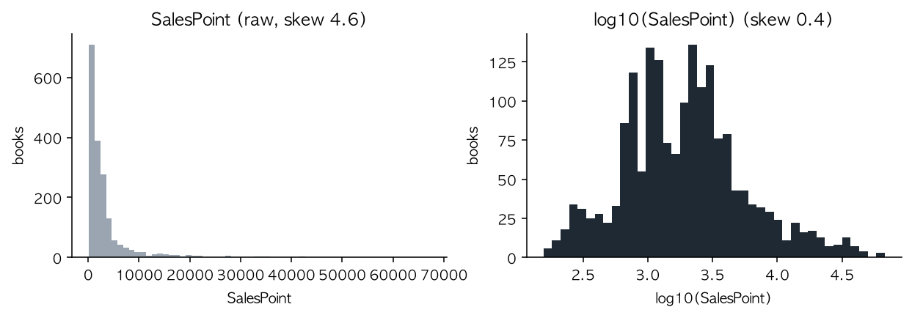
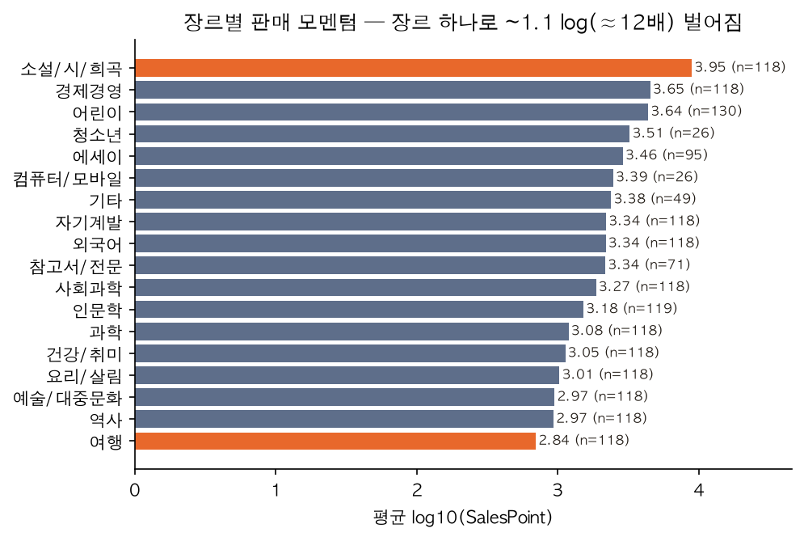
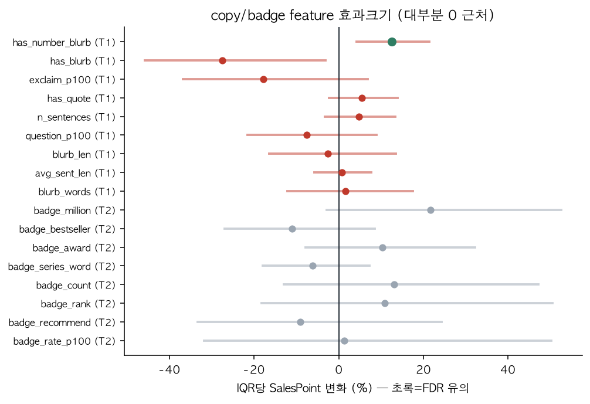
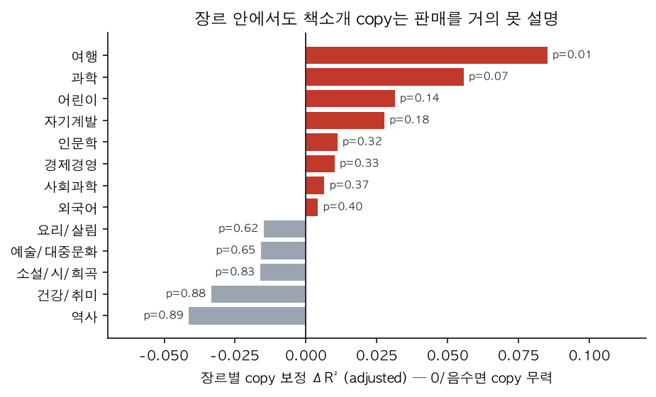

“좋은 책소개가 책을 팔린다”는 통념
온라인 서점의 상품 페이지에서 가장 공들이는 칸 중 하나가 책소개 문구다. ‘베스트셀러’ ‘수상작’ ‘100만 부’ 같은 말이 박혀 있으면 더 끌린다고들 믿는다. 정말 그 문구가 판매를 끌어올릴까? 아니면 잘 팔리는 책이 그렇게 적어 두는 것뿐일까?
질문을 측정 가능하게 좁혔다. 분석 단위는 책 한 권, 타깃은 판매 모멘텀 지표인 판매지수다. 원래 Yes24 판매지수를 보려 했지만 합법 공개 API가 없어, 같은 ‘최근 가중 누적 판매’ 계열인 알라딘 SalesPoint로 대체했다. 책소개 문구의 텍스트 특성·장르·페이지수·가격이 판매지수와 어떻게 연관되는지를, 누적 리뷰·출간 경과·평점 같은 교란요인을 감안한 뒤 분리하는 것이 목표다. 미리 못 박는다: 이건 관찰 데이터라 상관이지 인과가 아니다.
알라딘 API로 모은 1,814권
알라딘 TTB 공개 API에서 장르별 베스트셀러 목록을 따라 책을 모았다. 목록 한 줄에 이미 판매지수·책소개·장르·가격·출간일이 들어 있고, 책마다 상세 조회를 한 번 더 걸어 페이지수와 리뷰 수를 채웠다. 조인 키는 ISBN13. 판매지수가 0(아직 안 팔린 신간)이거나 출간 90일 미만인 책은 지수가 덜 여물어 제외했고, 장르 균형을 맞춰 최종 1,814권으로 정리했다.
목록 API
ItemList · ItemSearch
장르별 베스트셀러·검색 결과. 한 줄에 판매지수·책소개 blurb·장르 경로·정가/판매가·평점이 포함. 50개/페이지.
상세 조회
ItemLookUp · ISBN13
책별 1회 호출로 페이지수(길이)와 리뷰 수(별점·100자평·마이리뷰), 시리즈 여부를 확보. 총 1,896 호출(한도 5,000/일 이내).
파생 텍스트 feature
blurb 중앙값 142자
책소개에서 길이·문장수·문장부호·숫자 포함 여부 등 ‘문구 통제가능’ 특성(T1)과, ‘성취 배지’ 키워드(T2: 베스트셀러·수상·만 부…)를 분리해 추출. 단 짧은 blurb뿐, 전체 책소개는 API 미제공.
여기 약한 고리가 하나 있고, 그게 이 분석 전체의 해석을 묶는다. 표본은 전부 이미 베스트셀러 목록에 올라 있는 책들이다 — 즉 결과변수(판매)로 걸러진 표본. 잘 안 팔리는 책의 ‘긴 꼬리’는 구조적으로 빠져 있다. 나중에 ‘copy가 판매를 못 움직인다’는 결과가 나와도, 그것이 차트 *안* 이야기지 ‘책이 차트에 *오르는*’ 단계의 이야기는 아님을 계속 염두에 둬야 한다.
판매지수의 모양과 장르라는 무대
판매지수는 한쪽으로 길게 쏠려 있다(왜도 4.6). 소수의 초대형 베스트셀러가 꼬리를 끌기 때문에, 로그를 취해 분포를 펴고(왜도 0.4) 모든 분석의 타깃을 log10(판매지수)로 뒀다(그림 1). 판매지수는 ‘판매량×최근성’ 가중 지수라, 단순 누적 판매량이 아니라 지금 얼마나 팔리는가에 가깝다.

본론에 들어가기 전, 무대를 보면 한 변수가 이미 압도적이다. 장르다(그림 2). 장르별 평균 판매 모멘텀은 여행(2.84)부터 소설(3.95)까지 약 1.1 log — 즉 약 12배 벌어진다. 어떤 책인지보다 ‘어느 칸의 책인지’가 판매지수의 큰 부분을 미리 정해 둔다는 뜻이다.

copy에게 ‘자기 몫’을 따로 물었다
흔한 실수는 ‘장르+가격+길이+문구’를 한 덩어리로 넣고 “설명력이 올랐다”고 말하는 것이다. 그러면 장르가 다 끌어올린 걸 문구 공으로 돌리게 된다. 그래서 모델을 층층이 쌓아 각 블록이 ‘자기 혼자’ 보태는 설명력(ΔR²)을 쟀다. 교란요인만 넣으면 R²=0.30, 장르·가격·길이를 더하면 0.52로 뛴다(거의 전부 장르). 그 위에 책소개 문구를 더해도 R²는 0.524 — 단 +0.008이다(그림 3). 합격선으로 잡았던 0.02의 절반에도 못 미친다. 문장부호·길이·감탄·의문… 9개 문구 특성 중 다중검정 보정 후 살아남은 건 딱 하나(책소개에 숫자가 들어가는지)뿐이었다.

“장르가 차지한 자리에, 문구가 보탤 칸은 거의 남아 있지 않았다.”
‘효과 없음’이 아니라 ‘검출 못 함’
여기서 한 발 물러서야 한다. 우리 표본은 이미 차트에 오른 책들이다. 문구가 정말 힘을 쓴다면 그건 아마 책을 차트에 올리는 발견 단계일 텐데, ‘차트인한 책만 보기’는 바로 그 변화를 잘라낸다. 즉 이 설계는 문구의 진짜 효과를 축소하는 쪽으로 작동한다. 그러니 정확한 진술은 “문구는 무의미하다”가 아니라 “차트 안에서의 순위는 문구로 설명되지 않으며, 이 표본에서는 문구 효과를 검출할 수 없다”이다.
⚠ 표본이 결과변수로 선택되었다
베스트셀러 목록 + 판매지수>0 조건으로 표본이 판매 자체로 걸러졌다. 이는 문구 효과를 0 쪽으로 끌어내리고, 예측 R²의 일반화도 ‘차트 안’으로 한정한다. 비차트·신간을 포함한 무편향 표집이면 결과가 달라질 수 있으나, 알라딘 구조상 그런 표집은 불가능했다.
‘베스트셀러 키워드 효과’라는 착시
가장 그럴듯한 통념을 정면으로 깼다. 책소개에 ‘베스트셀러·수상’ 같은 배지 키워드가 있는 책은 없는 책보다 약 2.0배 높은 판매지수를 보인다 — 통제 전에는. 하지만 이건 만들어진 효과다. 장르만 통제해도 배지의 추가 설명력은 ΔR² 0.051에서 0.012로 무너지고, 교란요인을 전부 넣으면 0.007로, FDR 유의 키워드는 8개 중 0개가 된다(그림 4). 배지와 누적 인기(리뷰)의 상관도 0.04~0.16으로 낮다. 즉 ‘이미 인기라 그렇게 광고한다’는 순수 역인과라기보다, 잘 팔리는 장르의 책들이 그런 키워드를 함께 달고 있을 뿐이다.
배지 키워드의 추가 설명력 ΔR²
그림 4 캡션.
리뷰 수는 ‘좋은 문구→리뷰↑→판매↑’ 경로의 중간 변수일 수 있어, 통제하면 문구 효과를 가릴 위험이 있다. 그래서 리뷰를 빼고도 문구 ΔR²를 재봤지만 여전히 +0.009로 미미했다 — 문구가 약한 건 통제 탓이 아니라 문구 자체 때문이다. 또 비선형 모델(부스팅 트리)에서도 문구를 넣으면 예측이 오히려 0.02 나빠져, ‘선형이라 못 잡았다’는 변명도 닫혔다.
“키워드가 책을 판 게 아니라, 잘 팔리는 책이 그 키워드를 달고 있었다.”
장르평균을 이겨야 했던 예측
예측에서도 같은 규율을 걸었다. 출판사가 실제로 쓸 수 있는 건 출간 전에 아는 것(문구·장르·길이·가격·저자)뿐이라, 그것만으로 만든 ‘사전런칭 모델(B2)’을 평가했다. 베이스라인은 가장 단순한 장르평균. 그리고 같은 저자가 train·test에 갈리지 않도록 저자 단위로 폴드를 나눴다(GroupKFold). 결과는 표와 같다 — 사전런칭 모델은 장르평균을 거의 못 이긴다.
| 모델 | 역할 | test R² (log) |
|---|---|---|
| 전체평균 | floor baseline | 0.00 |
| 장르평균 | baseline (이겨야 할 선) | 0.386 |
| B2 사전런칭 (문구+장르+길이+가격) | ★ 결정관련 | 0.400 |
| B1 리뷰 포함 | 상한 (출간 후 변수) | 0.52 |
20개 랜덤 시드로 다시 돌려도 사전런칭 모델이 장르평균을 +0.05 이상 이긴 경우는 0/20이었다. 게다가 문구 feature를 넣으면 예측이 평균적으로 더 나빠졌다. 반대로 리뷰를 넣은 상한 모델(B1)은 0.52까지 오르는데, 이는 누적 인기(리뷰)가 장르 위에서 가장 큰 추가 신호(약 +0.10)임을 뜻한다 — 그러나 리뷰는 출간 후에야 생기는 변수다.
장르를 통째로 빼고 봐도 결론은 같았다 — 장르별로 따로 회귀하면(slope도 자유롭게) copy의 과적합 보정 ΔR² 중앙값은 +0.007, 절반 장르는 음수였고 13장르 중 FDR을 통과한 곳은 0개였다(그림 5). ‘장르 안에서는 다를 것’이라는 기대도 데이터로 닫혔다 — 여행 장르만 약한 단서로 남는다.

그래서, 문구는 거의 안 움직였다
우리가 세운 두 합격선 — 문구가 자기 몫으로 ΔR²≥0.02·유의 특성 3개 이상, 사전런칭 예측이 장르평균+0.05 — 은 모두 미달(NOT MET)이었다. 그리고 이 음성 결과는 다중 시드·비선형·매개변수 점검을 모두 통과한 견고한 결과다.
출판사 입장에서 이 결과는 ‘실패’가 아니라 자원 배분의 단서다. 차트에 오른 책들 사이에서는, 책소개 문구의 미세 조정으로 판매 모멘텀을 끌어올릴 근거가 보이지 않는다. 끌어올리는 건 장르 포지셔닝과 출간 후 리뷰·입소문 모멘텀이다. 다만 표본이 ‘이미 팔리는 책’에 한정돼 있어, 책을 차트에 올리는 발견 단계에서 문구가 하는 역할은 이 분석이 답하지 못한다(후속 과제).
문구는 거의 못 움직인다
문구의 자기 몫 ΔR²=+0.008, 유의 특성 1/9. blurb 미세 조정에 마케팅 자원 과투자할 근거 없음.
‘배지 효과’는 착시
베스트셀러·수상 키워드의 2배 격차는 장르 교란. 통제하면 유의 0/8. ‘성취를 적어라’식 조언은 무효.
장르 + 리뷰가 지배
장르 하나로 ~12배, 리뷰가 그 위 최대 신호(+0.10). 둘 다 문구로 통제 불가 — 포지셔닝·입소문에 집중.
검증할 가설 하나
책소개에 ‘구체적 숫자’ 포함 → +12.5%/IQR(유일하게 강건). 단 관찰적·책 유형 교란 가능 → A/B로 검증할 가설.
이 결론을 뒤집을 수 있는 것들
가장 큰 약점은 표본이 결과변수로 선택됐다는 점이다. 아래 중 하나라도 바뀌면 결론이 흔들릴 수 있다. 정직하게 말하면, 이 분석은 ‘차트 안’의 이야기이고 ‘차트에 오르는’ 이야기는 아니다.
가장 중요한 한계
표본 1,814권은 전부 장르 베스트셀러 차트에 오른 책(판매지수>0). 판매로 선택된 표본이라 문구 효과가 0 쪽으로 축소됐을 수 있다. 비차트·신간을 포함한 무편향 표집이면 문구가 더(또는 덜) 보일 여지가 있으나, 알라딘 API에는 그런 무작위 책 표집 수단이 없다.
짧은 책소개뿐
텍스트가 중앙값 142자 blurb에 한정. 전체 책소개·목차·서평을 보면 신호가 더 있을 수 있음.
단일 스냅샷·단일 서점
2026-06-29 알라딘 한 시점. 판매지수는 매출·부수가 아니라 최근가중 모멘텀. 다른 시점·채널이면 다를 수 있음.
미관측 교란
마케팅비·표지·미디어 노출·각색 미통제. 따라서 모든 문구 계수는 상한(과대 추정)으로 봐야.
균형 표본 = 인구비례 아님
장르를 균형 맞춰 표집해 장르 우세의 ‘크기’는 실제 시장 비율과 다를 수 있음. 방향은 견고.
출처
- 도서 DB 알라딘 인터넷서점 (www.aladin.co.kr) — 도서 DB 제공 : 알라딘 인터넷서점
- API 알라딘 TTB Open API — ItemList / ItemSearch / ItemLookUp
- 수집 2026-06-29 · 1,896 호출 · 1,814권 (비상업·분석 용도)
참고 자료
- 기간 · 표본 2026-06 스냅샷 · 1,814권 · 18 장르(균형)
- 방법 log10(판매지수) OLS (HC3 + 저자 군집 SE) · BH-FDR · 중첩 ΔR² · GroupKFold(저자) 예측(Ridge/HGB/RF)
- 성격 관찰적 — 상관, 인과 아님
- 한계 결과변수-선택 표본 · 단일 스냅샷/서점 · 판매지수≠매출 · 짧은 blurb